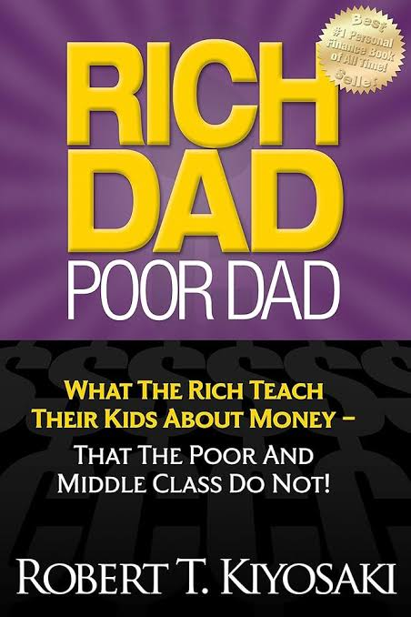

RICH DAD POOR DAD

ABOUT THE BOOK
Rich Dad Poor Dad is a 1997 book written by Robert T. Kiyosaki and Sharon Lechter. It advocates the importance of financial literacy (financial education), financial independence and building wealth through investing in assets, real estate investing, starting and owning businesses, as well as increasing one's financial intelligence (financial IQ).Rich Dad Poor Dad is written in the style of a set of parables based on Kiyosaki's life. The titular "rich dad" is his best friend's father who accumulated wealth due to entrepreneurship and savvy investing, while the "poor dad" is claimed to be Kiyosaki's own father who he says worked hard all his life but never obtained financial security.
The existence of Kiyosaki's "Rich Dad" remains unproven, and there is no documentation on Kiyosaki's alleged vast reserves of wealth earned before Rich Dad Poor Dad was published.